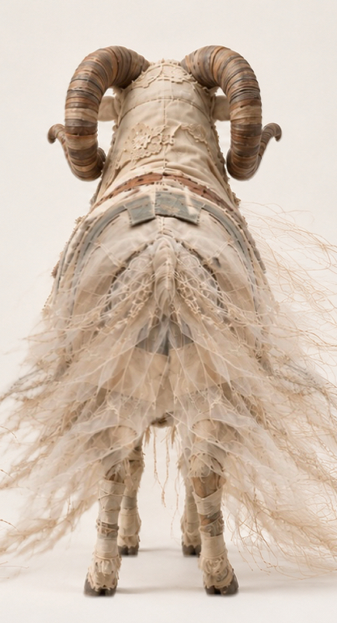
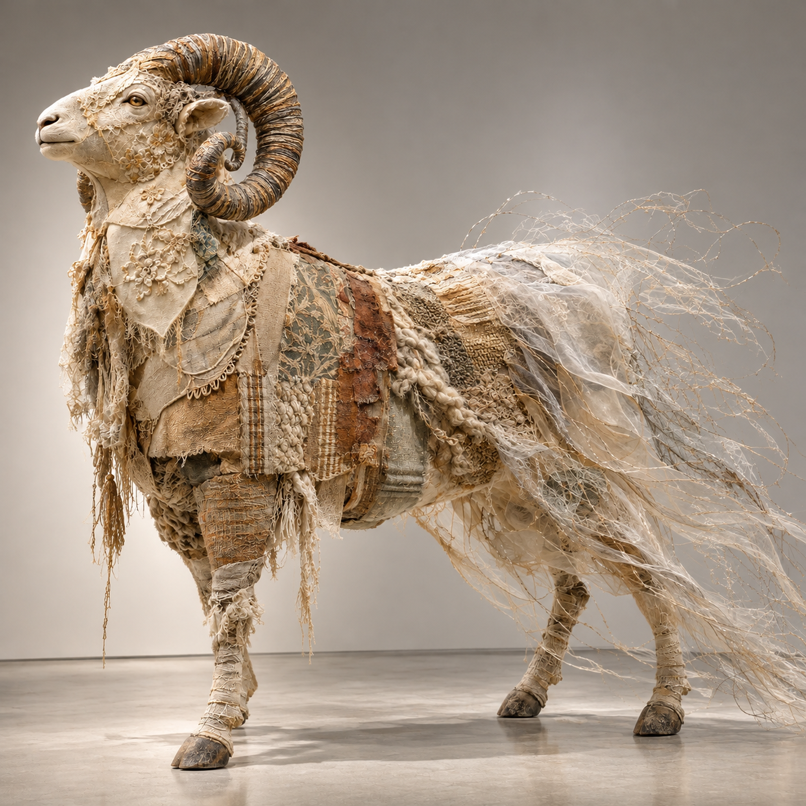

STAGE 01
太初
一切尚未被定义。空白的形体，等待第一缕纤维落下。


01 — THE OBJECT
从整体形态进入，观察材料如何在时间中层叠、交织与成形。
点击不同视图，查看作品的整体形态、不同角度与局部纹理。当前为图片切换展示，并非 3D 旋转。
02 — MATERIAL STUDY
材料不仅构成形体，也保存触感、记忆与时间的痕迹。点击卡片，查看材料纹理。
03 — THE PASSAGE OF TIME
五个阶段，记录形体从空白到丰盈的过程。
STAGE 01
一切尚未被定义。空白的形体，等待第一缕纤维落下。

04 — PROCESS & RESEARCH
让灵感、材料研究与数字制作过程成为作品的一部分。
以不同年代与质感的织物构成羊的形体，让材料成为时间的刻度。
通过麻布、棉布、羊毛、丝绸与欧根纱的肌理对比，探索材料之间的叠合关系。
记录图像生成、提示词调整、方案筛选与视觉迭代过程。
整理图像合成、细节调整与最终视觉输出过程。